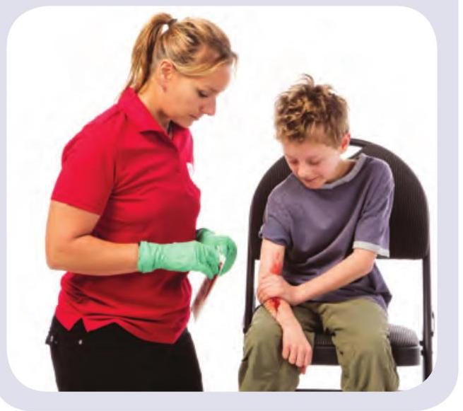
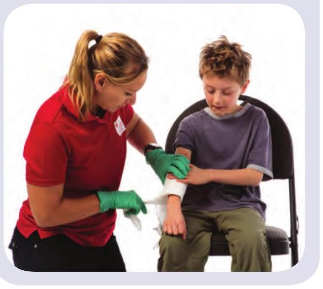
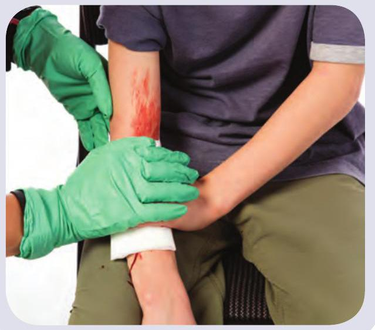
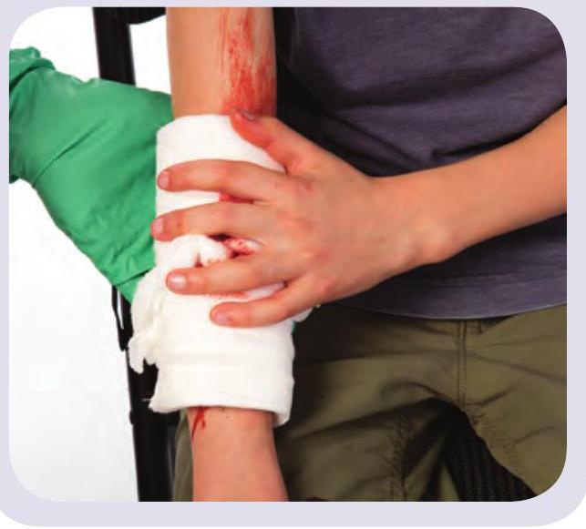
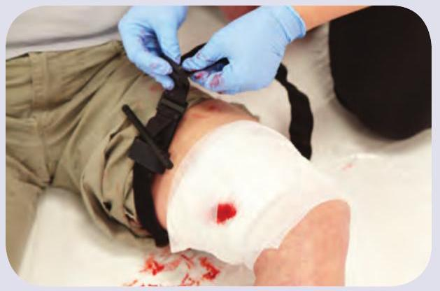
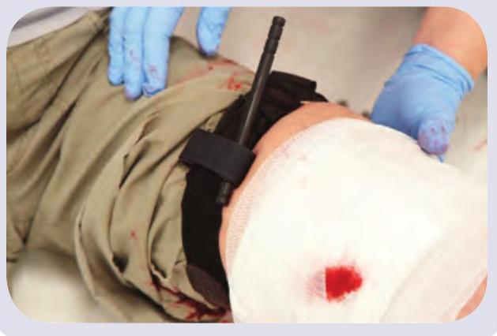
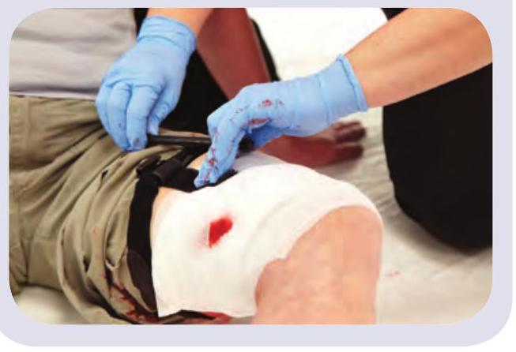
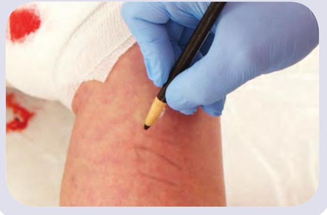

5 Circulation Emergencies
Heart Attack
A heart attack occurs when the heart cannot get enough oxygen because of a blockage in one of the arteries that feed it.
What to Look For
Classic signs of a heart attack are pain, pressure, tightness, or heaviness in the chest, or pain radiating from the chest to the arm(s), shoulder(s), back, jaw, and/or neck. A person may also experience:
- Shortness of breath
- Nausea or vomiting
- Cool, pale, sweaty skin
- Dizziness
- Unresponsiveness
Call
Call EMS/9-1-1 and get an AED immediately.
Care
- Have the person rest quietly.
- Have the person chew either 1 regular-strength or 2 low-dose acetylsalicylic acid (ASA) tablets.
Stroke
A stroke happens when the blood flow to part of the brain is interrupted. A person of any age can have a stroke.
What to Look For
- A sudden, severe headache
- Dizziness or confusion
- Unresponsiveness or temporary loss of responsiveness
- Sudden loss of bladder or bowel control
FAST
When trying to determine if a person is having a stroke, remember the acronym FAST:
- FACE—facial numbness or weakness, especially on one side
- Arm—arm numbness or weakness, especially on one side
- Speech—abnormal speech, difficulty speaking or understanding others, or a loss of speech
- TIME—time is important; call EMS/9-1-1 immediately
Call
Call EMS/9-1-1 and get an AED.
Care
- Have the person rest in a comfortable position.
- Note when the signs and symptoms first started (or the last time the person was known to be well).
Life-Threatening External Bleeding
Life-threatening external bleeding is bleeding that is difficult to stop or control.
Call
Immediately apply direct pressure and then call EMS/9-1-1.
Care
- Apply firm, direct pressure to the wound. 
- While maintaining direct pressure, apply a dressing and bandage it in place. 
- If blood soaks through the bandage, apply another bandage on top. 
- If direct pressure does not control the bleeding, consider using a tourniquet. 
Applying a Tourniquet
The following situations may require a tourniquet:
- The bleeding cannot be controlled using direct pressure.
- You are unable to access the wound.
- You must move the person and are unable to maintain direct pressure.
- Apply the tourniquet: It should be one hand's width above the injury and at least two fingers' width above any joint. 
- Tighten the tourniquet until the bleeding stops. 
- Secure the tourniquet in place. 
- Document the time the tourniquet was tightened. 
Life-Threatening Internal Bleeding
What to Look For
- Bruising and pain in the injured area
- Soft tissues that are tender, swollen, or hard
- Blood in saliva or vomit
- Severe thirst, nausea, or vomiting
- Anxiety

Call
Call EMS/9-1-1 and get an AED.
Care
- Have the person rest quietly until EMS personnel arrive.